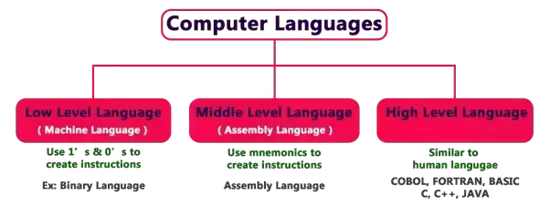

BASIC TYPES OF COMPUTER LANGUAGE:
Low-Level Languages:
A language that corresponds directly to a specific machine. OR Low-level languages are such languages, which can be easily understandable for computers.
High-Level Languages:
Any language that is independent of the machine. OR High-level languages are such languages, which are more human understandable.
Middle-Level Languages:
Middle-level languages lie intermediate between above two types.
